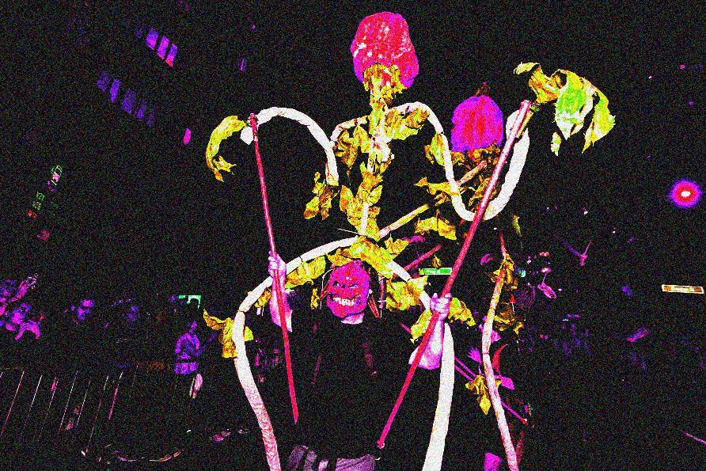

This was my first time attending the Halloween Village Parade in NYC. One of my regrets was not going to it last year during my first year living in the city. I honestly didn’t know what to expect or how crowded it was going to be. All I’d known or seen prior were social media videos of people in the parade dancing to Michael Jackson’s Thriller. Ultimately, I did want to see if the spirit of Halloween ran rampant through the streets, similar to the movies. It did indeed.
As I stepped into the crowds of people gathering along Sixth Ave in Manhattan, the first thing I encountered was an explosion of color. Costumes, ranging from witches to pop culture icons, filled the streets. Handcrafted masks, sewn outfits, LED light attachments and other DIY elements were included. Spinning wheels, glowing skeletons, and towering headpieces that stretch above the crowd. The sheer creativity is overstimulating, with costumes often taking months to design and construct. The parade’s vibrant flow of performers and floats make for a fun interactive experience, even if you’re not in the parade itself but merely observing it. The floats are equally mesmerizing, adorned with shimmery and glowing decor along with an array of eerie imagery, all designed to capture the Halloween spirit.The rhythmic thumping of distant drums, and music played on speakers grows louder as various musical groups come into view. The parade features marching bands, street musicians, and performers whose costumes are strong in delivering visual impact, coinciding with auditory impact.
It’s also worth mentioning how crowded the area gets. Not only on Sixth Ave where the parade takes place, but there’s crowds of people at the surrounding street blocks. Amongst this organized chaos, there are also the sounds that make the experience fit uniquely to New York City, of course. The occasional honk of a taxi, the chatter of people on the sidewalks, and the other street sounds that make up the rhythm of the city. While I did not dress up in a full costume, I still channeled my inner Halloween wearing a pair of devil horns. Very spooky.
Earthy and smoky scents were common, especially as I got closer to the parade, along with the occasional food aromas from nearby restaurants. Something I noticed as an observer on the side were the silhouettes of people behind and in front of me near the rooftops of buildings. You could also see people who lived on the street of the parade standing outside on their balconies, their silhouettes also visible from the light within their living space behind them. It was just very sweet to see so many people attentive to the dedication that went into the parade. It’s brought up similar feelings to being at a concert. It was also nice seeing some of the parade participants interact with the crowd of observers. I was close to the front of the crowd but there were still a couple of people in front of me. Occasionally some people would walk by and high five the crowd or just interact, in a performative way. I also found humor in how each time a float passed by, which typically came in like five minute intervals, a good portion of people including myself would pull out their phones to record and immediately stop once the float passed. As an artist, I really got to appreciate the craft of it all in everything.
Beyond the sensory overload, there’s an emotional layer to the experience. A contagious excitement and attentiveness to the parade from the observes surrounding you which captures the magic of Halloween. At times I’ve felt nostalgic from the holiday because you grow up dressing up and trick or treating and when you grow up, those feelings of excitement slowly fade. I have so many incredible memories of Halloween and seeing it on a larger scale in NYC in this parade was very cool. Every laugh, every cheer, every unexpected costume adds to the feeling that you are witnessing something truly extraordinary. As you look around, you see awe in the faces of children, laughter from adults, and an overall sense of wonder that fills the entire space. The parade becomes more than just a visual or auditory display. It’s simply a celebration of life, creativity, and of the collective spirit of New York City. I’m so glad I was able to experience this and I look forward to continue going in the years ahead.